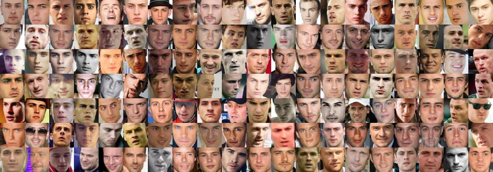

Who! Me?

Digital Collage
Shown here installed at the Photographer's Gallery for an event commissioned by the Flickr Foundation.
139 Faces that could be mistaken for me by a machine, sourced from notable facial recognition datasets – out of ~20 million tested. Ordered most to least similar, by python's facial_recognition library. Works as an operational representation of embeddings and cosine similarity algorithms, while also questioning contemporary notions of an individual 'likeness'.
Major Datasets used:
Caltech WebFaces<, Casia WebFaces, CelebA, Chicago, FERET, Flickr-Face, Human_Face, Labelled Faces in the Wild, UTKFace, VGG-Face, MegaFace,
